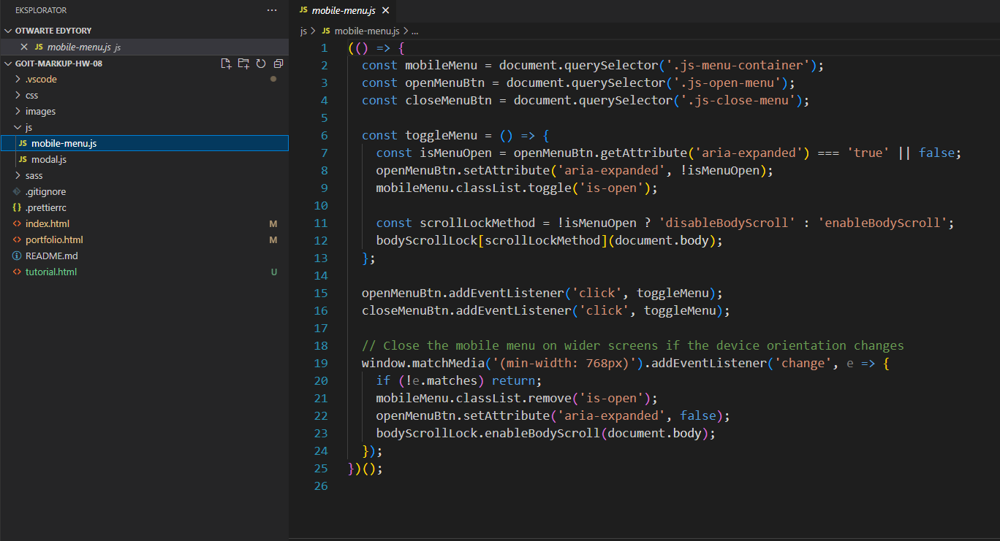

Tworzymy plik mobile-menu.js w folderze /js i wklejamy tam skrypt z tego pliku :
mobile-menu.js
Wrzucamy skrypt w HTML`u tak samo jak zrobiliśmy to dla skryptu z oknem modelnym z
zadania 05
Robimy / kopiujemy ikonkę hamburgera z figmy - wrzucamy svg do naszego pliku ze
sprite`ami icons.svg , a następnie wrzucamy go jako buttona do naszego headera -
moim zdaniem wygodniej to zrobić poza nawigacją.
Możemy ustawić pojawianie i znikanie buttona oraz nawigacji za pomocą
display: none;
W buttonie dodajemy klasę ze stylami, oraz
koniecznie klasę
js-open-menu
to dzięki niej skrypt będzie wiedział, że przycisk ma służyć do otworzenia menu.
Na końcu strony tuż przed body tworzymy nasze menu (podobnie jak okno modalne).
Polecam zrobić po prostu diva i dać mu szerokość i wysokość np. 100vw / 100vh żeby
nam się wyświetlał na całym ekranie.
Musimy dodać klasę:
js-menu-container
to dzięki niemu skrypt wie co ma otworzyć.
Gdy przejedziemy na koniec strony pokaże się biała pusta przestrzeń - to właśnie
nasze przyszłe menu. Mam nadzieję że pamiętacie z hw-05 jak je wypozycjonować i
schować.
Pamiętacie słynne .is-hidden z
hw-05?
Zaglądamy do naszego pliku js i poza skryptem który jest dla nas w tym momencie
kompletną chińszczyzną zwracamy uwagę na
('is-open')
Jest to element który doda do naszego HTMLa klasę is-open, czyli klasę pokazującą
nasze menu.
Dlatego tak jak w hw-05 tworzymy nową klasę i dopisujemy
.is-open
(np .mobile-menu.is-open) Następnie
pozycjonujemy, lub ustawiamy opacity żeby okno z menu nam się pojawiło.
W tym momencie powiniśmy mieć coś takiego - pojawi nam się biały ekran, a w
narzędziach developerskich w HTMLu powinna pokazać się dodatkowa klasa np:
class="menu js-menu-containeris-open"
Zbyt funkcjonalne na ten moment nie jest - przydałby się przycisk do zamknięcia.
W środku naszego diva z menu tworzymy przycisk zamknięcia - i
koniecznie dodajemy klasę
js-close-menu
to dzięki niej skrypt będzie wiedział że służy do zamknięcia.
Ważne żeby były w HTMLu. Są one niejako "wirtualne" i służa tylko jako drogowskazy
dla skryptu js
Teraz przy klikaniu na przyciski okienko powinno się pojawiać i znikać. Możemy
dodać animacje / tranzycje żeby wyglądało ładniej. Teraz wystarczy je
wystylizować, dodać odpowiednią treść i gotowe!
!!! Jeśli będziecie robić portolio.html to pamiętajcie żeby tam również wrzucić
diva z menu i podlinkować skrypt !!!